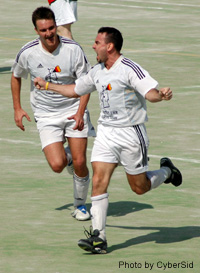

|  |
Celebrations worthy of a Cup winning goal as Angelo scores Swiss' winner near the end of their match with BEFC. |
Sat 23rd April, Great day for a game of footy, too bad it was hard a very tough one for the Swiss vs. the British Embassy. Starting with an
offensive formation, the Swiss appeared to think chances in abundance were going to lead to goals. Unfortunately, as was the case the week earlier against Maritizio
in the first half, an inability to find the net by what has been a potent strike force nearly cost them precious points. The game started with the Swiss holding
position and BEFC working hard (especially with only 10 men at the start) to pressure and then get all their men behind the ball. It paid off for the first 15 minutes
until the Swiss were able to get a cross in to speedy Yuji who snuck in to tap in from close range. The rest of the first half, it was more of the same. Swiss
holding on to the ball and trying to find a way in but too many passes or too many crosses to no one aggressive enough in the area meant many chances were wasted.
Everyone was guilty of either not having a crack on target or getting on the end of a corner or a cross. Credit to the BEFC defense who worked hard and pressured the
forwards and cleared numerous chances away but it was really the lack of Swiss ability to put it away which proved to be the weak spot. The first half ended 1-0 to the
Swiss but it should have been more, the BEFC had barely been in the Swiss half of the field and didn't have a shot all half.
The second half looked to be more of the same possession-wise and the Swiss hoped the introduction of Angelo might spark the attack force. Instead, more missed chances
and a lack of understanding between new players caused more confusion than opportunity. It was very frustrating to watch from the back and it is games like these that
lead to upsets. That looked to be on the cards when 20 minutes into the 2H, the BEFC earned a free kick near midfield. Their big central defender came up into attack
to act as the target man. He pushed Kirk off the header (another no-call from King Kazu) and the ball bounced near the top of the box without anyone claiming it. New
defensive recruit Cho had a free chance to clear it but instead passed it directly to the on-rushing big man who then shot calmly into the lower left hand corner of
the net for a 1-1 tie. Completely against the run of play but a well taken goal off a defensive error.
For the Swiss, with title aspirations on the line, everything was thrown forward to try and score the winner. No more passing around, crosses from everywhere into the
box. At least people started shooting more and started to test the keeper. Angleo's acrobatics were on display as he tried a bicycle kick in the area to no avail.
Suzuki shooting from distance drew a nice save from the keeper, later on he shot from 7 yards out, straight to the corner flag. Kai had a beautiful header off a corner
kick going into the right hand corner only for Angelo to block it away. The Swiss tried everything with no result. The game seemed destined for a draw as a result of
the well organized BEFC defense and the woeful Swiss attack. Luckily, with about 5 minutes to go, a cross from the right bounced in behind the defense and Angelo's
hard work paid off again with a difficult but well taken goal. The cheers from the Swiss team had never been louder and everyone breathed a sigh of relief at what
appeared to be the game winner – the last 5 minutes seemed long but the final whistle was a welcome one. A very ugly victory but in league play, anything can happen on
any day. Well done to the BEFC for sticking to a strategy that nearly paid off. The Swiss have got to be more clinical in front of the net in their last 2 matches to
have any hope of claiming the title.
Cap'n Kirk |